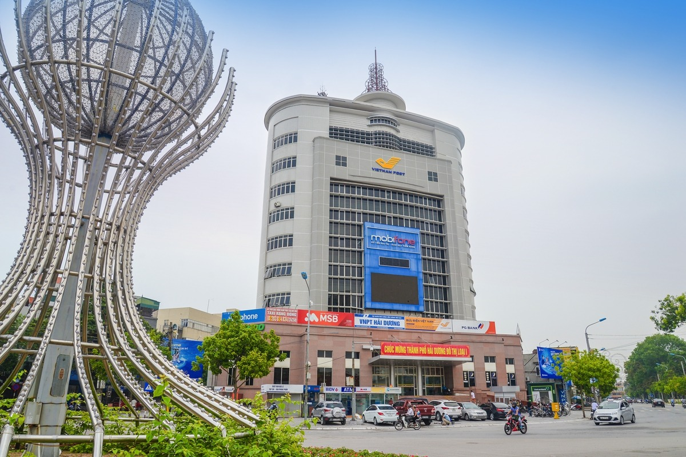

Home
Blog
Contact
Welcome to My Website!
Xứ Sở 34 Hải Dương
Xứ Sở 34 là một địa danh nổi tiếng thuộc tỉnh Hải Dương, Việt Nam. Đây là
nơi có nhiều đặc sản và phong cảnh đẹp, mang đậm bản sắc văn hóa của miền
Bắc.
Hãy đến trải nghiệm nhé:

About me
- Xứ Sở 34 có nhiều di tích lịch sử và văn hóa, phản ánh truyền thống lâu
đời của người dân nơi đây.
- Các lễ hội truyền thống diễn ra thường xuyên, thu hút đông đảo du khách.